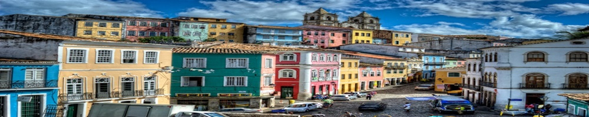
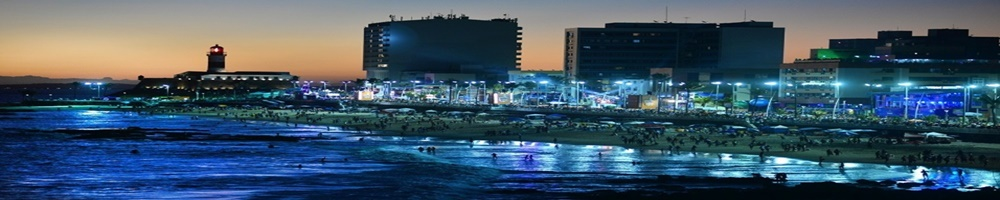
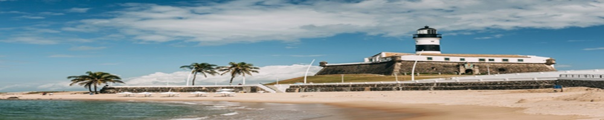

Located in Northeast Brazil, with the third-largest urban population of Brazil (about 3 million people) and the eighth in Latin America, Salvador is the capital of the state of Bahia and was the first capital of Brazil. Its metropolitan area has the second largest GDP in the North-Northeast Brazil.
One of Salvador’s most well-known parties is Carnival, which bring tourists from all around the world and is considered by many as the biggest street party in the world. Among the main touristic points, the historical center—also known as Pelourinho—stands out for its architecture, specially its baroque churches, museums and various artistic and cultural demonstrations. There you can find crafts, music, Capoeira, and social projects. While visiting Pelourinho is hard to avoid tasting Bahia’s most traditional dishes such as caruru, vatapá, acarajé, bobó-de-camarão, moqueca baiana, and abará.
Salvador’s coast is one of the biggest in Brazil and covers a large number of paradisiac beaches such as Praia do Forte and Praia do Flamengo, being Morro do São Paulo a couple of hours away. Another attraction in Salvador is the beautiful sunset at Barra lighthouse. Salvador, you can feel the difference!
Frequently called by “Pelourinho”, the Historic Center of Salvador is known for its Portuguese colonial architecture, baroque churches, museums and various artistic and cultural interventions. There we can find handicrafts, live music, Capoeira and social projects. When visiting Pelourinho, is hard not to try traditinal food such as: caruru, vatapá, acarajé, bobó-de-camarão, moqueca baiana, and abará.
On the hill of Farol da Barra, behind the Nautical Museum, visitors and inhabitants of Salvador meet to contemplate the magnificent sunset. The feeling of seeing the sun hiding in the water (on the east cost!) is really special and relaxing time. Besides this special and relaxing moment, you can have fun at Barra’s beach by doing Stand Up Paddle or by Scuba Diving to see fishes, coral reef and the wreckage of the Ship Maraldi. After you had fun, you can also visit the Nautical Museum to know more about nautical history of the Bahia.
The Salvador coastline is one of the longest for cities in Brazil, with more than 50 Km long. Besides the Porto da Barra, and Praia do Flamengo, Morro de São Paulo is a paradisiac island nearby Salvador — with catamaran connection — worth visiting.
